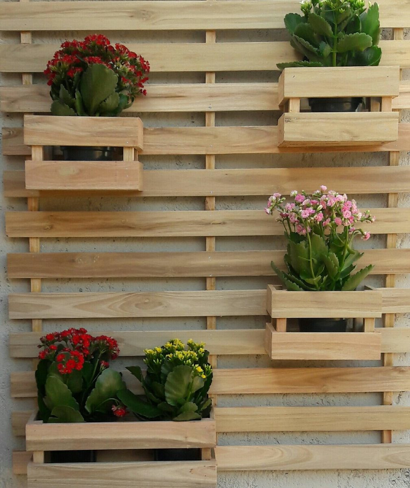

Esse site faz parte de um projeto escolar! cuja finalidade é
incentivar e também mostrar como e quais materiais
podem ou não serem reutilizados/reciclados.
Reconhecendo a importância da conscientização ambiental, buscamos fornecer informações claras e acessíveis para que todas as
pessoas possam tomar decisões informadas sobre o descarte correto de
resíduos e contribuir com a preservação do meio ambiente.
Materiais Que Podem Ser Reciclados:
Nem todos os materiais podem ser reciclados, mas neste primeiro
momento iremos ver quais podem e devem ser
reciclados. Abaixo segue a lista desses materiais:
Azul - Papel e
Papelão
Vermelho
- Plástico
Verde - Vidro
Amarelo - Metais
Marrom
- Resíduos Orgânicos
Preto - Madeira
Como Podemos Reciclar Madeira?
A reciclagem da madeira envolve diferentes abordagens para sua reutilização. Uma opção comum é a trituração da madeira em aparas ou lascas, que podem ser empregadas na produção de aglomerados de madeira, fabricação de papel, biomassa para energia ou como cobertura de solo em paisagismo. Além disso, a reutilização e a restauração da madeira desempenham um papel importante na reciclagem. Peças de madeira em boas condições podem ser recuperadas, reparadas e reintroduzidas em novos projetos ou na restauração de estruturas existentes, prolongando sua vida útil e reduzindo a demanda por novos materiais. Quando a reciclagem não é viável, a madeira também pode ser utilizada como combustível em usinas de biomassa, contribuindo para a produção de calor ou eletricidade.
Outra opção de reciclagem da madeira é a compostagem. Resíduos de madeira não tratada, como lascas ou restos de podas de árvores, podem ser compostados junto com outros resíduos orgânicos, resultando em composto rico em nutrientes que pode ser utilizado como fertilizante para o solo. No entanto, é importante ter em mente que a madeira tratada com produtos químicos, como preservativos, requer tratamento especial devido à possibilidade de contaminação do solo e da água. Portanto, é fundamental seguir as regulamentações locais para o descarte adequado e seguro desses materiais, garantindo a proteção do meio ambiente.A reciclagem da madeira desempenha um papel importante na redução do desperdício e no aproveitamento máximo dos recursos naturais. Além de minimizar a necessidade de extração de novas árvores, a reciclagem da madeira contribui para a redução da quantidade de resíduos enviados para aterros sanitários, a conservação da biodiversidade e a promoção de práticas sustentáveis.
Tempo de Decomposição da Madeira:
O tempo de decomposição da madeira varia dependendo de vários fatores, como a espécie da madeira, as condições ambientais e o tratamento recebido. Em condições ideais de umidade, temperatura e presença de organismos decompositores, a madeira pode se decompor em alguns anos. No entanto, em condições menos favoráveis, como ambientes secos ou com baixa atividade microbiana, a decomposição da madeira pode levar décadas ou até mesmo séculos.A madeira macia, como pinho ou abeto, tende a se decompor mais rapidamente do que a madeira dura, como carvalho ou mogno, devido à sua estrutura menos densa. Além disso, o tratamento da madeira com produtos químicos, como os utilizados em madeira tratada para fins de preservação, pode retardar a decomposição.
A decomposição da madeira é um processo natural em que fungos, insetos e bactérias desempenham um papel importante. Esses organismos se alimentam dos componentes da madeira, quebrando sua estrutura molecular e liberando os nutrientes de volta ao ambiente. É importante ressaltar que a madeira pode ter um tempo de decomposição mais rápido se estiver exposta a condições favoráveis, como umidade elevada e temperaturas mais altas. Por outro lado, a madeira em ambientes secos ou tratada com produtos preservativos pode levar muito mais tempo para se decompor.Ao reciclar a madeira, é possível dar a ela uma nova utilidade e estender sua vida útil, reduzindo assim a quantidade de resíduos e promovendo a sustentabilidade.
Como Podemos Reutilizar a Madeira?
A reutilização da madeira oferece diversas possibilidades criativas e práticas. Uma maneira é transformar a madeira em móveis personalizados, como mesas, cadeiras, estantes e prateleiras, dando um toque único aos ambientes. Além disso, a madeira reutilizada pode ser utilizada em projetos de bricolagem, permitindo a criação de peças únicas, como suportes para plantas, caixas de armazenamento e organizadores de parede. A reutilização da madeira também é uma ótima opção para revestir e decorar paredes, conferindo um aspecto rústico e acolhedor aos espaços internos. Além disso, a madeira pode ser utilizada em projetos de jardinagem e paisagismo, criando canteiros elevados, cercas, estruturas para trepadeiras e decks, contribuindo para uma estética natural e sustentável.

Ao reutilizar a madeira, estamos reduzindo a quantidade de resíduos e prolongando a vida útil desse recurso natural. Além disso, estamos evitando a extração de novas árvores e promovendo a sustentabilidade. A reutilização da madeira também permite que cada peça conte uma história única, trazendo personalidade e charme aos ambientes. Seja na forma de móveis, elementos decorativos, revestimentos ou estruturas para áreas externas, a reutilização da madeira é uma prática eco-friendly que agrega valor estético e ambiental aos projetos.
Vídeo mostrando como funciona a reciclagem da madeira: